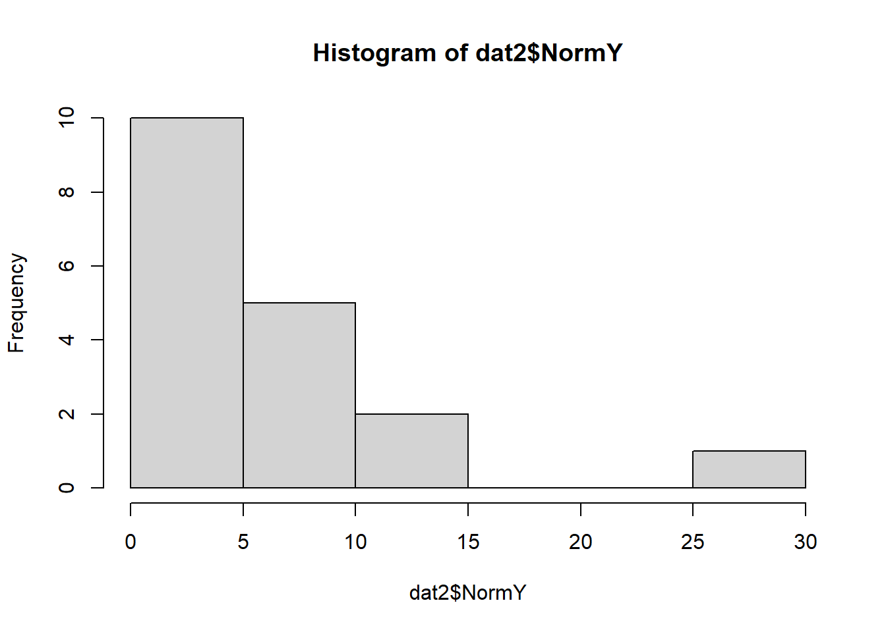
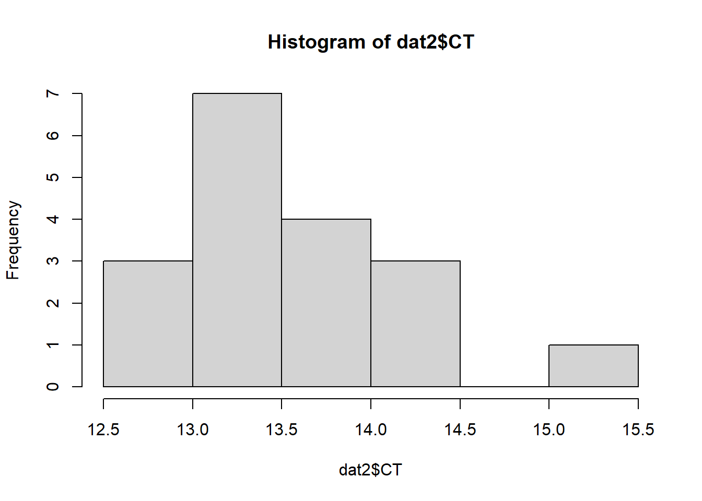
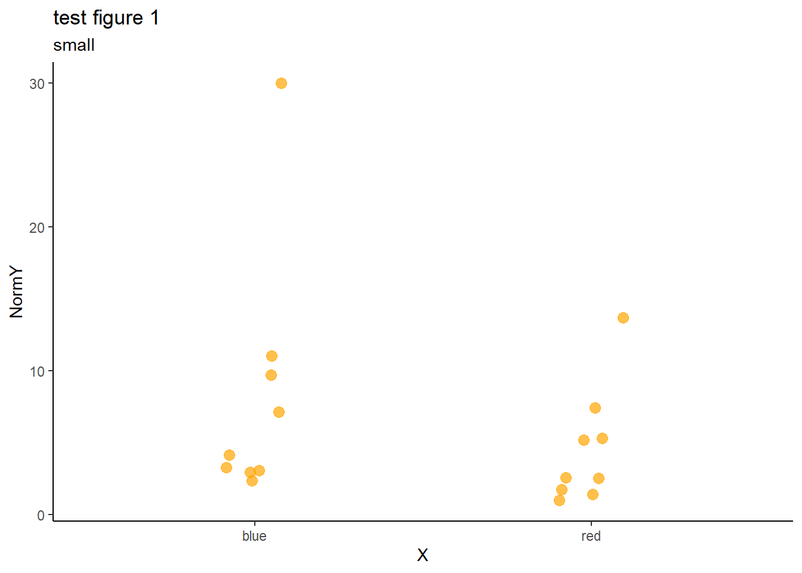

5 Descriptive information
As we have discussed there will and are a collection of attributes that your research will have without/before collecting data. These things are important for prelimary analysis and things like power analysis. This chapter helps create descriptive statistics for our research.
We should all know what these are and how to render/generate a report or document in RMarkdown.
The next we will produce a RMarkdown document for the question we have been working on ready to add data and other sampling design information.
#general packages used
library(tidyverse)5.1 Importing data
From the model above it is possible to generate a dataset to produce a model fit and outcomes generated.
datRawIn <- read.csv(here::here("notes2022/data/Analysis_ardMods.csv"))Select variables from dataset and check the numerical structure is correct in R (numerical, factor etc).
# 3what response
responseACT <- c(datRawIn$Delta.Ct.Mean)
responseACT2 <- c(datRawIn$EQ.Ct.Mean)
p1 <- hist(responseACT)
p2 <- hist(responseACT2)
par(mfrow = c(2,2))
hist(responseACT2)
hist(responseACT)What does this tell us about how RProjects and other funky things work?
- Data import
# dat <- read.csv("data/Analysis_ardMods.csv")
dat <- read.csv("notes2022/data/AnalysisSimple2.csv")
glimpse(dat)## Rows: 18
## Columns: 13
## $ ï..qPCR.ID <chr> "Sample 1", "Sample 2", "Sample 3", "Sample 4", "Sample 5"~
## $ Sample.ID <chr> "Ab39.4-4", "Ab39.4-5", "Ab39.4-6", "Ab39.4-7", "Ab39.4-8"~
## $ Gapdh.CT <dbl> 12.90898, 14.25320, 13.53162, 13.37721, 14.24936, 15.05268~
## $ IL.12p40.CT <dbl> 29.03335, 29.49289, 29.35403, 30.03361, 28.45837, 29.93511~
## $ DeltaCT <dbl> 16.12437, 15.23969, 15.82242, 16.65640, 14.20900, 14.88243~
## $ Yform <dbl> 1.39985e-05, 2.58461e-05, 1.72575e-05, 9.68108e-06, 5.2803~
## $ NormY <dbl> 1.3998531, 2.5846142, 1.7257488, 0.9681077, 5.2803716, 3.3~
## $ CT <dbl> 12.90898, 14.25320, 13.53162, 13.37721, 14.24936, 15.05268~
## $ IL.6.CT <dbl> 24.87968, 30.88497, 25.32136, 22.90003, 26.01840, 27.08113~
## $ K.J <dbl> 11.970696, 16.631767, 11.789745, 9.522829, 11.769031, 12.0~
## $ Yform.1 <dbl> 0.0002491500, 0.0000098478, 0.0002824440, 0.0013593860, 0.~
## $ NormY.1 <dbl> 0.249150312, 0.009847804, 0.282444495, 1.359386108, 0.2865~
## $ treatment <chr> "red", "red", "red", "red", "red", "blue", "blue", "blue",~variable.names(dat)## [1] "ï..qPCR.ID" "Sample.ID" "Gapdh.CT" "IL.12p40.CT" "DeltaCT"
## [6] "Yform" "NormY" "CT" "IL.6.CT" "K.J"
## [11] "Yform.1" "NormY.1" "treatment"dat1 <- dat %>%
select(CT,NormY, treatment)
dat2 <- dat1 %>%
mutate(treatment = as.factor(treatment))
glimpse(dat2) ## Rows: 18
## Columns: 3
## $ CT <dbl> 12.90898, 14.25320, 13.53162, 13.37721, 14.24936, 15.05268, ~
## $ NormY <dbl> 1.3998531, 2.5846142, 1.7257488, 0.9681077, 5.2803716, 3.310~
## $ treatment <fct> red, red, red, red, red, blue, blue, blue, blue, blue, blue,~table(dat2$treatment)##
## blue red
## 9 9levels(dat2$treatment)## [1] "blue" "red"table(dat2$NormY)##
## 0.968107711 1.399853134 1.725748792 2.347926871 2.521406058 2.584614246
## 1 1 1 1 1 1
## 2.941109452 3.112983596 3.310870251 4.15262465 5.170244383 5.280371649
## 1 1 1 1 1 1
## 7.145824462 7.43600363 9.711078137 11.0225451 13.68043761 29.95071366
## 1 1 1 1 1 1levels(dat2$NormY)## NULLhist(dat2$NormY)
hist(dat2$CT)
# removedData <- dat %>%
# filter(Omit != "false")
# # length(unique(dat$Well.Position))
# # outcome <- dat$
# table(dat$Omit)
# head(removedData)5.1.0.1 Visualising data
Data visualisation
variable.names(dat2)## [1] "CT" "NormY" "treatment"p1 <- ggplot(dat) +
# geom_boxplot(aes(x = treatment, y = NormY),outlier.size = 0) +
geom_jitter(aes(x = treatment, y = NormY), size = 3, colour = "orange", alpha = 0.7, width = 0.1) +
theme_bw() +
theme_classic() +
xlab("X") +
ggtitle("test figure 1", subtitle = "small")
p1
# # table(dat$Well.Position)
# mean(dat$Delta.Ct.Mean, na.rm = TRUE)
# sd(dat$Delta.Ct.Mean, na.rm = TRUE)
#
# hist(dat$Delta.Ct.Mean)5.1.1 Scatter plot
- Data import
# dat <- read.csv("data/Analysis_ardMods.csv")- Data visualisation
# table(dat$Well.Position)
# mean(dat$Delta.Ct.Mean, na.rm = TRUE)
# sd(dat$Delta.Ct.Mean, na.rm = TRUE)
#
# hist(dat$Delta.Ct.Mean)- Tidyverse approach
# variable.names(dat)
#
# #sample name
# # table(dat$Sample.Name)
# table(dat$Target.Name)
# mean(as.numeric(dat$CT), na.rm = TRUE)
##sumarise over Target Name and find n, mean, mode, median, sd, etc for each of the target names?Nicer plots using
ggplotTidyverse approach
#tidy data
#tibble- ggplot
Much easier to work this this and tidyverse
- Read a cool sampling design/issue paper
5.1.1.1 Reporting
#general packages used
library(tidyverse)We should all know what these are and how to render a report in RMarkdown. Next we will produce a RMarkdown document for the question we have been working on ready to add data and other sampling design information.
- Outcome and predictor variables
- Other study examples and code
- Other studies with same sampling design
- Other reference material.
- Read a cool sampling design/issue paper